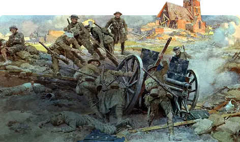

Desarrollo del Conflicto
¿Cuando inicio La Guerra?
El inicio de la Primera Guerra Mundial ocurrió entre julio y principios de agosto de 1914 después de la Crisis de Julio. Sin embargo, las causas de fondo que provocaron la guerra se gestaron en décadas previas al conflicto: El imperialismo europeo en África y Asia, el antiguo sistema de alianzas militares, la polarización política en Europa, la súbita carrera armamentista entre Gran Bretaña y Alemania que luego se extendió al resto de Europa y Rusia, así como las delicadas tensiones en la península de los Balcanes. En pleno apogeo de su poderío global, la Primera Guerra Mundial llevó a Europa hacia un conflicto abismal que precipitó el final de la era del Imperialismo europeo, fueron derrocadas cuatro dinastías imperiales y desató una serie de revoluciones comunistas: la Revolución rusa, la Revolución bolchevique y la Guerra civil rusa.
Principales Batallas
| Nombre de la Batalla | Fecha | Países Involucrados | Resultado |
|---|---|---|---|
| Batalla del Marne | Septiembre 1914 | Francia, Reino Unido vs Alemania | Victoria aliada, frena el avance alemán |
| Batalla de Verdún | Febrero–Diciembre 1916 | Francia vs Alemania | Victoria francesa, enorme pérdida humana |
| Batalla del Somme | Julio–Noviembre 1916 | Reino Unido, Francia vs Alemania | Sin vencedor claro, grandes bajas |
| Batalla de Gallípoli | Abril 1915 – Enero 1916 | Imperio Otomano vs Aliados (incluyendo Australia y Nueva Zelanda) | Victoria otomana |
| Ofensiva de los Cien Días | Agosto – Noviembre 1918 | Aliados vs Alemania | Victoria aliada, lleva al final de la guerra |
Guerra de Trincheras
La guerra de trincheras durante la Primera Guerra Mundial fue un nuevo tipo de combate que surgió debido a la mejora en las armas de fuego, lo que llevó a un estancamiento en el frente occidental.
Las trincheras eran largas y estaban construidas con sacos de arena, donde miles de combatientes murieron en condiciones insalubres.
Esta forma de guerra tuvo importantes consecuencias tácticas y estratégicas, cambiando la percepción de la guerra y la idea de "gloria" que prevalecía en conflictos anteriores.
La guerra de trincheras se intensificó entre 1915 y 1916, con una estrategia que consistía en cavar trincheras desde la frontera suiza hasta el Canal de la Mancha.
Se conoció como una manera de hacer guerra que alcanzó su máxima expresión en el Frente Occidental durante la Primera Guerra Mundial.
Esta forma de combate resultó en un conflicto extremadamente mortífero y prolongado.